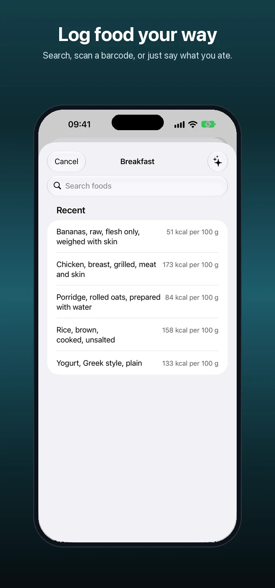
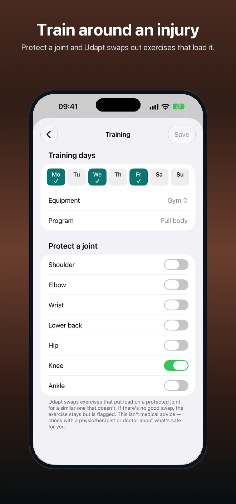
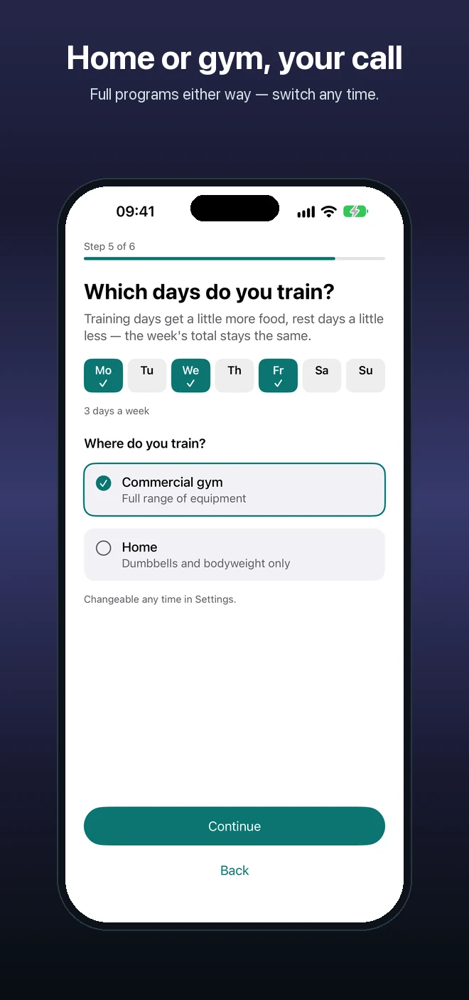

Readiness that means something
Heart rate variability, resting heart rate and sleep from Apple Health, or a 5-question morning check-in if you don't wear your Watch to bed. Either way, you get a score and a plain reason why.
Udapt reads Apple Health (or a quick morning check-in) every day and adjusts today's training and today's food targets together, as one connected plan — with a plain-English reason for every change. No spreadsheets, no separate apps to reconcile.


Heart rate variability, resting heart rate and sleep from Apple Health, or a 5-question morning check-in if you don't wear your Watch to bed. Either way, you get a score and a plain reason why.
A rough night trims today's sets and caps effort automatically. A good run of days lets your program progress. You can always keep the original session, one tap.
More carbs on training days, a little less on rest days — the week's total stays the same. After two weeks of logging, your calorie target adapts to what your body actually does, not a generic formula.
Search thousands of foods, scan a barcode, or use on-device AI to log a meal from a photo or by describing it out loud — nothing leaves your phone.
Flag a shoulder, knee or lower back you're being careful with, and Udapt automatically swaps exercises that load it for a like-for-like alternative that doesn't.
No ads, no third-party analytics. Health data stays in Apple Health; anything Udapt-only stays on your phone.
Swipe through the real app.



Pricing: Udapt is a subscription: £6.99/month or £39.99/year, with a 7-day free trial on both plans.
Good to know: Udapt is a wellness tool, not a medical device, and doesn't diagnose or treat anything. Always talk to your doctor about what's safe for you, especially around injuries.
Udapt has its own website, with full pricing, privacy and support information.
See what you're flying over. A window-seat companion that names the landmarks, cities and natural wonders below your plane, even in airplane mode.
Your GLP-1 journey, tracked privately. Doses, dose steps, injection sites, weight and side effects for Mounjaro, Wegovy, Ozempic and more.